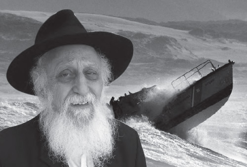

Answers from the Rebbe
“I had yechidus at two in the morning. I stood there facing the Rebbe and I, the tough sailor who wasn’t afraid in the face of mighty waves that threatened my ship, lost my bravado with a split second glance from the Rebbe. I was mute.” * The life story of Uziel Paltin, a sailor for many years who c

“As someone whose life’s course was somewhat unusual, it was important to me to get my story in writing, mainly for our younger generation, who are the future of the nation. I want them to know that the wide expanses of the sea, foreign and exotic shores and all the delights of the world, are all G-d’s wonders. There is nothing to it all if they are not a springboard for awareness of the Creator and following in His ways, the ways of Torah.”
That is how Uzi Paltin began his story which he wrote in 5753 with the Rebbe’s bracha. When we met, upon the recommendation of a friend of mine, I found a modest individual who was not thrilled about publicity.
“It was already written,” he said to my request that he tell me about his life. He said he prefers putting his time and energy into looking for tidbits and gematrios about the tribe of Z’vulun. That is what he is busy with these days.
“I am in the final stages of writing a book about the secrets of the tribe of Z’vulun, the most fascinating tribe, in my opinion.” It’s not very difficult to guess why an old sea dog like him is enamored of the tribe of Z’vulun …
The following article is a composite of many conversations I had with Paltin. This is in addition to looking at his book and hearing gripping sea yarns, adventures of sailors along with the internal thought processes and struggles that, according to Paltin, are also an inseparable part of the lives of sailors who spend weeks and months navigating their ships in the Atlantic.
FAR FROM SHORE
As a child, Uzi breathed the rarefied air of Yerushalayim. He was born in the Zichron Yosef neighborhood. His parents, Matisyahu and Tova Paltin, were G-d fearing Jews with tremendous emunas chachomim (faith in Torah sages), and they sought to instill these values in their children whom they sent to religious schools.
“My personal transformation began after I turned ten and my mother became sick. We had to leave Yerushalayim and move to Tel Aviv. My parents bought a home on Rechov Baal Shem Tov in a southern part of the city. I attended the religious Tachkemoni School and my parents worked hard to raise me in the ways of the Torah.
“It was 1948 and the atmosphere in Eretz Yisroel, especially in Tel Aviv, was one of fear and tension along with heady feelings of independence that led many to abandon their heritage. A new nation had risen up in Eretz Yisroel that felt entitled to cast off the ways of its fathers and to construct a system free of any faith, Torah and mitzvos. Unfortunately, I and my siblings got caught up in this national excitement to the sorrow of my parents. My youth included a period of training in a program at Kibbutz Be’eri in the Negev. In Tel Aviv, I became acquainted with the sea.
“I lived near the ocean and we spent many hours there. My brother and I became outstanding swimmers and we spent a lot of time fishing. The sea was both therapeutic for me as well as a place of adventure. One beautiful autumn day, when I was sixteen, I saw a ship anchor in Yaffo’s port about two kilometers from the shore. I decided I would swim out to it. I asked my brother to join me but he refused. It wasn’t easy swimming such a great distance, but I was determined and he finally agreed to join me.
“We swam and swam until we became exhausted. When we looked behind us, we saw we had swum quite far. People on the shore looked like matchsticks. ‘Maybe we should turn back,’ my brother suggested worriedly, but I was determined to reach the ship and touch it. ‘What difference does it make if we swim further or turn back?’ I retorted. ‘We are closer to the ship.’ He continued swimming with me. The ship’s captain looked at us in astonishment. Where had these two human fish come from? They immediately lowered a lifeboat and took us to shore where we kept vomiting up the water we had swallowed.”
Uzi was questioned by the coast guard about this adventure, but the experience did not dampen his love for the sea; on the contrary. His dream was to steer a ship on the ocean. Not surprisingly, when he became of draft age, he joined the navy, at his request. Within a short time he had become a sailor on the frigate class warship named the K-28 or Mivtach (INS Reliance).
“It was a small ship even by the standards of the time. Our main job was coastal missions. Even when we sailed out to deeper waters for training exercises, these forays were brief. My love of the sea grew until it was my entire world.
“I looked forward eagerly to a voyage across the world. I considered that to be the ultimate adventure. Today, in hindsight, I realize that I had a strong desire to disconnect from my past and to feel as free as possible. One day, we were told that we would be sailing to Naples, Italy. I and my fellow sailors rejoiced at the news but were soon disappointed. Shortly after we set sail a severe storm arose and instead of an adventure, we turned back. However, the pull of the sea did not let up and we anticipated another voyage. It never happened.”
AT SEA
“As soon as I was released from the navy, I joined a merchant fleet and sailed with them for many years. My first voyage was in a ship called HaShlosha. This was a small boat with not much engine power. No wonder it took us nearly two weeks to reach Genoa, Italy. In that amount of time a large ship could cross the Atlantic, going from Haifa to New York.
“It is hard to describe to what extent, on every voyage, we see the hand of G-d. A ship is literally like a walnut shell in the face of the powerhouse of nature. Over the course of many years working at sea, I went through endless numbers of heart-stopping adventures. A pity that in those days I was far from being religiously observant and did not know chapter 107 of T’hillim where it says, ‘Those who go down to the sea in ships, who do work on great waters; They have seen the works of Hashem and His wonders in the deep. For He spoke and raised up a stormy wind which lifted up the waves of the sea.’ Every sailor can tell stories about storms at sea and mighty waves as well as the feeling that in another moment you will descend into the depths. How great is the joy when you reach safe shores. The feeling cannot be described in words.
“Yes, there were a few particularly hairy episodes. I will tell you about one which occurred in 5721. We sailed from Haifa on the Har HaCarmel and our destination was the US. On the way, we entered the area known as the Bermuda Triangle, which is infamous for the violent storms there. Sailors call it a ships’ graveyard, because of the numerous ships that have sunk there.
“During the voyage we enjoyed calm days, but at sea everything can change in an instant. One day, as we traveled serenely along, the captain, a Finn, decided to go down into the bowels of the ship. He was a chevraman and he decided to paint the inner walls of the ship’s store rooms where the paint had peeled off. He wasn’t lazy and he didn’t mind doing menial tasks. At times like these, he would assign veteran sailors to the wheel including myself.
“A few hours went by and our instruments indicated that a big storm was heading our way. We quickly sent a sailor to the captain to inform him of developments but with a ship that size, it took time.
“We knew that during a storm we had to immediately close and lock all the store rooms and stow all loose objects in all the rooms. However, the young sailor, who was inexperienced, decided to open all the doors and lean all the planks as if he was taking a leisurely trip. In the meantime, the storm had arrived and he found himself under intense pressure. He lost his senses and tried to move a big beam, but the strong winds tossed him into one of the store rooms from a height of 15 meters. A few of us hurried down into the bowels of the ship; we were sure he wouldn’t make it out alive. We lowered ropes and ladders and when we got there, we saw he was seriously injured.
“Fortunately for him, there was an American aircraft carrier in the vicinity. We knew that aircraft carriers had superior medical staff and even an operating room and so we radioed them. The storm was in full force and there was no way that a helicopter could fly or land under those conditions. Having no choice, and entailing great danger, we raised him up on a stretcher to the upper deck which rolled with the waves. Every shift caused him great pain. We stood by his side and kept up his spirits until the storm died down. Then the Americans took him and treated him. It was a stormy experience in more ways than one.”
TRAVERSING THE ATLANTIC
The dangers in sailing ships across the sea are enormous. Four years after that experience in which a crew member was injured, the statistics caught up with Uzi. It was a cold and stormy day in 5725. He and his mates were coming and going from European ports like Marseilles, France and Rotterdam, Holland.
“On that voyage, we were sailing the merchant ship Esrog for the Zim Lines. We entered the Kiel Canal with Copenhagen, Denmark our destination. The Danish flag was already hoisted on the masthead and we were met by snow and freezing cold. We were wearing ski caps and wrapped in scarves, sweaters and coats.
“We pulled into port late at night. I was glad I had no guard duty and could do as I pleased. I went to my cabin and hung the sign, ‘I am sleeping. Please be quiet.’ I felt into an exhausted sleep. I was woken up early in the morning when the ship had already anchored in the port. The snow and wind continued to whirl about outside. Whoever did not have to go out, stayed put.
“Now, whenever the ship was anchored in port, we would tie strong ropes to the pier and cut the engine. When we wanted to leave, the ropes would be untied and we would begin sailing out into the open sea. My job was to bring the rope back to the ship. It is simple to do when the weather is calm, but dangerous in wintry weather when the rope has a large iron hook on the end. Strong winds howled outside and I had a hard time controlling the rope; it was absolutely taut.
“Then a frantic cry was heard. ‘Let go of the rope!’ I screamed at the man on the shore, ‘It’s going to rip!’ Within seconds, the thick rope, which seemed capable of withstanding any wind and any exigencies of nature, ripped from the force of the 6000 ton ship buffeted by the heavy winds. The rope made a complete circuit in the air and then landed on me, full-force. I felt everything turn white around me. It was hard for me to breathe. My instinct said to breathe; I tried, breathing once, twice, and then I lost consciousness.
“When I woke up, I heard a commotion around me. It turned out I had been severely injured. A doctor who had been called for from the shore by the captain wanted me moved immediately to a hospital. I stayed in the hospital in Denmark for sixteen days until I recovered. I did not recognize that I had been saved by a miracle and my life given to me as a gift. Back then, I did not think about Torah and mitzvos. Every day at sea provided me with new horizons of freedom. I spent a lot of time in conversations with Jewish and gentile sailors. We spoke about every topic under the sun including spiritual matters, but they did not lead me in the desired direction. It is interesting that these sailors, known for their toughness, turned out to be dear Jews. Despite everything, their Jewish hearts were awake to Judaism. When you learn Chassidus, it is all understood. A Jew is literally a part of G-d above. But even without learning, if you think about it, it will strike you how a Jew remains a Jew no matter the circumstances.
“One of the special moments I experienced was on a long voyage I made. We sailed on the Har HaGilboa to the United States with an itinerary spread out over 21 months in which I was away from Eretz Yisroel. It was a very difficult trip, especially when the ship wasn’t loaded with cargo and it was thrown about like a walnut shell in even the mildest breeze. This is hard, even for someone used to the waves. When it’s like this, even the veterans look forward to the end of the storm.
“During this difficult trip, we crossed the Atlantic Ocean no less than 123 times. When we were approaching the end, the crew was ecstatic. The plan was to drop anchor in the port of Haifa, but a last minute change had us head for the port in Tel Aviv. Since the port at Tel Aviv is not set up for large ships, we had to get into little boats that would bring us to shore. When we finally finished setting the anchor, we waited for a small boat to take us.
“Each of us waited impatiently to meet family members and to rest up from the long trip. We saw a small boat approaching. At first, it looked tiny, like a dot on the horizon, but it slowly grew. When it touched our ship, I was so moved to see my father, R’ Matisyahu. I have no words with which to describe the excitement I felt. He unfastened himself and jumped towards me onto the ship. I noticed that his beard had grown white and he was more bent over. I hadn’t seen him for nearly two years. I immediately took him to my cabin to rest.
“After resting briefly, he asked me which way was east. It was late in the day and he wanted to daven Mincha. My friends were surprised by his question – since when was he a sailor who wanted to know which way the winds were blowing? Then my father asked me to get ten Jews together to form a minyan. Nobody refused him and all joined with great respect. It was quite an unusual sight. I saw how my father stood in the center, surrounded by sailors dressed in overalls with hammers, knives, screwdrivers and other tools hanging from their belts, and all stood silently with the lapping of the waves heard loudly in the background.”
770 AND TWO SOULS
Years went by and Uzi could no longer tolerate lengthy voyages.
“There comes a time when you decide it’s enough. I had fully experienced life as a sailor and I wanted to do something else. In 5726 I decided to return to dry land. I settled in New York where my ties to tradition were exceedingly weak.
“Following the deaths of my parents, I visited Eretz Yisroel and then returned to New York. Like many Israelis at that time, I drove a taxi and made money. I also married and had a family and was sure my life was set.
“All this changed when I was asked to drive a passenger from Manhattan to Crown Heights. The passenger was clearly religious and the address he wanted was 770 Eastern Parkway. The address did not mean anything to me. It was nighttime and when he got out I saw that the place was lit up and many people were coming and going as though it was two in the afternoon. I was curious enough to park the car and go inside. I was amazed by everything I saw. I just stood there and looked around.
“As I stood there, bareheaded, R’ Shraga Zalmanov (shliach in Queens) came over to me and put a hat on my head and began talking to me as though we were old acquaintances. R’ Zalmanov was warm and self confident and had lots of Jewish pride. He moved quickly from questions like ‘Where are you from’ and “What do you do’ to t’fillin, Shabbos, and establishing times to learn Nigleh and Chassidus.
“I can’t forget how, before we parted, he explained that a Jew has two souls, one animal and one G-dly, and just like we feed the animal soul physical food, we need to feed the G-dly soul the food it requires, spiritual food, Torah study and the doing of mitzvos. Otherwise, it starves, and starving isn’t healthy.
“I left 770 with new insights and deep thoughts. I thought back to my childhood, to my parents, to the holidays that we religiously observed. I felt a sudden yearning for my parents’ home, the shul, for Torah study and mitzvos. I became a regular visitor to 770.
“The high point was yechidus with the Rebbe. That year, 5741, I had yechidus at two in the morning. I stood in the Rebbe’s room and the hardened sailor who knew no fear, even in the face of massive waves that threatened to break the ship, lost his courage in the face of a second’s glance from the Rebbe. I couldn’t say a word. Before I walked in, I had thought of asking the Rebbe questions, but once inside the room, I didn’t dare open my mouth.
“The Rebbe blessed me and when he finished, I left and decided to change my way of life. The Rebbe’s gaze changed my outlook on life 180 degrees. The Rebbe made me a baal t’shuva.
“The very next day, I decided to investigate the depth of Judaism. I left my job and went to Yerushalayim. At first I attended R’ Yaakov Sofer’s Yeshivas Kaf HaChayim, but after a brief period I felt drawn to Lubavitch. The truth I had seen on the faces of the Chassidim is something you don’t see anywhere else; it was all with pleasantness and rooted in deep understanding. I remember that throughout my stay in yeshiva in Yerushalayim, the Rebbe’s eyes did not leave my mind’s eye. I could walk down the street and remember the Rebbe’s eyes and this brought me back to New York, this time – to 770.”
***
From when he was a child, Uzi enjoyed expressing his feelings in writing. Uzi took up this hobby once again as he wrote of the many experiences he had, as well as the feelings he had in yechidus and in his mingling with the Chassidim in 770. This is what he wrote:
“It is only nine days that I am with the Chabad Chassidim. I am amazed as I take in the atmosphere and I already feel and think differently. I can say that the beginning is hard, and sometimes it is too hard to bear, but I feel that something is shifting within me.
“Slowly, I feel the atmosphere, the atmosphere of k’dusha, bringing me to the point where superficial things and the nonsense of the world are starting to interest me less. It is clear that all this did nothing for me in the past but just weakened me. As the Chassidim put it – it strengthened the animal soul within me.
“Every day, spiritual sensibilities are strengthened within me. I have a picture of the Rebbe in my room in which he is wearing t’fillin and it seems to me that he is looking at me and saying: Carry on! Don’t despair and don’t retreat. Taste it and see how our holy Torah is all joy.
“I also watched him as I stood next to him during davening. He had no connection to the nonsense of this world. Just being in his presence is an experience beyond human comprehension. He is with you, and at the same time, he is in another world, cleaving to G-d, and yet he sees you and knows your thoughts, even when he is not directly thinking of you. The moment his gaze is fixed on you, a shudder passes through you and your body begins to tremble.”
REVEALER OF SECRETS
It didn’t take long before Uzi became a Chassid. He grew a beard and wore a suit and the hat that Chassidim wear. He lived in Crown Heights for many years.
Now, after a lengthy sojourn during which he gained American citizenship, he decided to return to Yerushalayim and has settled in the Chabad community in Ramat Shlomo. He spends most of his time and energy on writing a book about the tribe of Z’vulun, all with authentic sources.
“I feel that I’ve uncovered the secrets of the tribe of Z’vulun,” said R’ Uzi emotionally, and he shared a little bit of what he has written. He no longer goes to the physical ocean, but he does spend plenty of time with the one who represents him in Torah, i.e. Z’vulun. He says he can talk about this topic for four hours without a break.
Towards the end, R’ Uzi spoke about his great love for the Rebbe and the amazing answers he receives through the Igros Kodesh, which make him feel the Rebbe is still with us.
“In 5762 I greatly desired going to 770 after not being there for a while. I put a letter in a volume of the Igros Kodesh and asked for a bracha for the trip. The answer I opened to was addressed to Rabbi Naftali Roth. The Rebbe wrote about his wanting to ‘come here at the end of Elul and return in Tishrei.’ What particularly amazed me was that the letter was number 5762 and the next answer was #5763. I felt that the Rebbe was giving me a bracha to leave in Elul 5762 and to stay until Tishrei 5763. I made the trip and was thrilled to be there.”
ANSWERS FROM THE REBBE
Over the years, R’ Uzi received many answers from the Rebbe. He shares three of them with us:
When I asked the Rebbe for a bracha to start writing my book, I did not receive an answer for some time. Then R’ Leibel Groner called me and gave me the answer: It requires much analysis whether it is possible, in the life of a sailor, to observe the laws of Shabbos and Yom Tov. His daily conduct should be in accordance with the instructions of our Torah, the Torah of life. Check t’fillin and mitzvos. I will mention it at the gravesite.
Right before printing the book which was written in the merit of the Rebbe in 5753, I asked the Rebbe for a bracha and this is what R’ Goner wrote to me: The Rebbe nodded his head in agreement and blessing for the printing of your book.
On my birthday, in 5746, I asked the Rebbe for a bracha and asked how I should conduct myself. The Rebbe’s response was: On the Shabbos before the birthday, an aliya to the Torah. On the birthday, tz’daka before Shacharis and before Mincha. Chitas and an additional shiur in Nigleh and Chassidus. I will mention it at the gravesite.
Nosson Avrohom. "Answers from the Rebbe." Beis Moshiach, no. 853 (October 24, 2012).